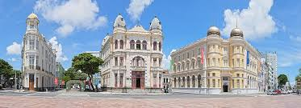

O coração pulsante da cidade
O Marco Zero é o ponto de referência principal da cidade do Recife, localizado na região central da cidade. É conhecido como o local onde a cidade foi fundada e marca o início dos quilômetros rodoviários de Pernambuco.
Este ponto turístico é famoso por sua praça ampla, rodeada de diversos monumentos e pelo famoso Chafariz, que data do período colonial.
Ao visitar o Marco Zero, você pode explorar uma série de atrações: